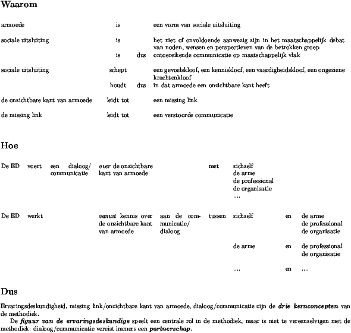

Vorige
Vorige
 Titelpagina
Titelpagina
 Volgende
Volgende
Armoede is een vorm van sociale uitsluiting. Sociale uitsluiting impliceert dat de betrokken groep niet of onvoldoende krachtig aanwezig is in het maatschappelijk debat met zijn noden, wensen en perspectieven. Sociale uitsluiting impliceert dus dat de stem van de betrokken groep onvoldoende gehoord wordt, omdat die uit het maatschappelijk debat geweerd wordt. De werking van de verenigingen waar armen het woord nemen en hun samenwerking in het Vlaams Netwerk van Verenigingen waar Armen het Woord Nemen is hierop een structureel antwoord.
Het concept van de missing link maakt er ons attent op dat we die ontoereikende participatie niet enkel mogen zien als een maatschappelijk fenomeen dat de armen als groep treft. Het concept maakt juist heel duidelijk zichtbaar hoe de sociale uitsluiting ertoe leidt dat de stem van ieder individu dat verplicht wordt in armoede te leven niet gehoord dreigt te worden in elk contact met de maatschappelijke instituties, in elk contact met de diensten, de organisaties en de voorzieningen waarmee mensen in armoede dagelijks te maken krijgen. De missing link leert ons bovendien dat we die stokkende dialoog tussen de arme en die diensten, organisaties en voorzieningen niet moeten toeschrijven aan het slecht functioneren van deze laatsten of aan de onwil of de onkunde van de mensen die er werken. De missing link verduidelijkt dat het eerder het grote verschil in ervarings- en belevingswereld is, dat maakt dat mensen in armoede zo moeilijk gehoor vinden. Die verschillende werelden leiden ertoe dat er vaak naast elkaar in plaats van met elkaar gepraat wordt.
De methodiek van het inschakelen van ervaringsdeskundigen kan men daarom zien als een structureel antwoord op deze problematiek op het niveau van de concrete dagelijkse uitsluitingsprocessen die zich steeds opnieuw reproduceren in de contacten tussen diensten en armen. Zo bezien is ook deze methodiek een door en door dialogische methodiek.
De veelvuldige citaten in dit boek hebben dit duidelijk zichtbaar gemaakt. In figuur 8.1 hebben we getracht het fundamenteel dialogische karakter van de methodiek ervaringsdeskundige, zoals die in de alledaagse praktijk gestalte krijgt, op een schematische wijze samen te vatten.

Figuur 8.1: De methodiek ED, voorgesteld als dialogische methodiek
Een ervaringsdeskundige verwoordde dit dialogische karakter van de methodiek eens op de volgende kernachtige manier:
“Ik werk niet. Ik ben hier gewoon aanwezig om mijn baas te ambeteren.”
Waarmee meteen ook duidelijk gemaakt wordt dat de ervaringsdeskundige het als zijn taak ziet om in de dialoog de stem van mensen in armoede aanwezig te stellen, te versterken of te verduidelijken. Die stem is structureel de zwakste, en dus is het logisch dat de ervaringsdeskundige de kant kiest van het perspectief van de arme. Maar vanuit die positie gaat hij wel voluit voor de dialoog tussen die arme en de dienstverleners.
Het uitgesproken dialogische karakter van de methodiek, zoals dat in de praktijk tot uiting komt, vindt zijn verantwoording in het Beroepscompetentieprofiel `ervaringsdeskundige in de armoede en sociale uitsluiting':
“We kunnen in de beroepsopdrachten van de ervaringsdeskundige twee sporen onderscheiden:
Spoor 1: Enerzijds gaat de ervaringsdeskundige in dialoog met collega's, de organisatie en het beleid om het inzicht in de 'missing link' te verhogen.” [SERV 2006, p. 9]
Dit spoor wordt duidelijk weerspiegeld in figuur 8.1.
Hoe deze dialoog in de praktijk kan verlopen, werd in dit boek veelvuldig zichtbaar gemaakt, ook dat dit soms moeizaam zoekend verloopt. Het volgende citaat uit een interview illustreert dit nog eens heel gevat.
“Als ED hier, nu, vandaag toekomt op de dienst op een dergelijke manier en helemaal overstuur over een situatie, waarin vanuit mijn perspectief gezien, echt alle waarden en normen met de voeten getreden worden, dan kan ik op mezelf vertrouwen en zeggen, `ja, maar ED, kust mijn....., daar zijn alle waarden en normen effectief overtreden, dus laat dat nu maar gebeuren, laat ze dat kind nu maar plaatsen!' Ja? Of ik zou ook kunnen zeggen, `ja maar neen neen, ED, gij hebt gelijk,' en door zo te reageren, ook mijn eigen waarden en normen verloochenen en laten voor wat ze zijn. En geen van die twee reacties is een goede.Ik moet daar een gulden middenweg in zoeken. Dus heb ik eigenlijk daarjuist aan ED gezegd, `ED, ik begrijp wel dat er diensten zijn die die weg kiezen, en ik begrijp wel dat jij die heel andere weg kiest. Laten we nu ne keer samen gaan zoeken van waar zit het verschil en waarom vindt gij die ene weg zo erg dat ge er zo overhoop van zijt.' Ge lost dat niet in twee minuten op. Ik ben er vast van overtuigd dat, nadat jij hier weg bent, ED en ik hier nog een uur of langer over zitten te praten, omdat we dus echt daarin samen moeten gaan zoeken.
Ik had gehoopt vandaag op tijd thuis te zijn. Dit zal me niet lukken. Ik wil dat ook wel investeren. Maar het slorpt mezelf wel heel erg op. Het was veel gemakkelijker voor mij om te zeggen, `ED, foert, hé!' Of ik kan ook helemaal meegaan met ED, en met hetzelfde gevoel als zij naar huis gaan en mij dan afvragen van wat heb ik nu eigenlijk gedaan. Want daar liggen mijn waarden niet, hé. Dus dat is het ook niet.
Ik kan dus alleen maar gaan zoeken. En dat zoeken, dat wil ik doen.”
Het beroepscompetentieprofiel heeft het nog over een tweede spoor:
“Spoor 2: Anderzijds zal de ervaringsdeskundige participeren in de activiteiten van de organisatie ter bestrijding van de armoede, maar dit steeds vanuit zijn specifieke invalshoek, gefocust op het recht en de gelijkwaardigheid van de kansarme.” [SERV 2006, p. 9]
Ook dit spoor van de methodiek kwam in de verhalen van onze gesprekspartners en in dit boek uitgebreid aan bod.
Hoe in het licht van dit spoor naar het schema in figuur 8.1 kan gekeken worden, vraagt wellicht iets meer toelichting. Dialogeren is het uitwisselen van betekenissen. We zijn spontaan geneigd om bij het begrip dialoog in de eerste plaats te denken aan woorden als de instrumenten voor die betekenisuitwisseling, zodat we het begrip gemakshalve vaak reduceren tot verbale dialoog. Het is nochtans bekend dat ook gedrag een drager van betekenis is. In de context van de communicatieleer gebruikt men in dat verband de term non-verbale communicatie. Vanuit dit gegeven hebben we er in ons schema voor geopteerd om de acties van de ervaringsdeskundige, zoals die in het tweede spoor uit het beroepscompetentieprofiel omschreven worden, ook onder te brengen onder de grote noemer van dialoog.
Door dit te doen willen we er de aandacht op vestigen dat ook de concrete werkzaamheden van de ervaringsdeskundige ons heel veel te vertellen hebben over het perspectief van mensen in armoede. Ze worden immers gestuurd door een kennis van armoede van binnenuit. En vanuit die kennisachtergrond verricht hij die werkzaamheden, zoals het beroepscompetentieprofiel het stelt, `vanuit zijn specifieke invalshoek, gefocust op het recht en de gelijkwaardigheid van de kansarme.' Onder het gedrag van de ervaringsdeskundige zit met andere woorden een schat aan informatie verborgen en daarom vinden we het geen echt grote gedachtesprong om ook in dit spoor in de beroepsuitoefening van de ervaringsdeskundige aanzetten tot of minstens kansen op dialoog te zien.
Door te kiezen voor een dergelijk perspectief op het beroep van ervaringsdeskundige willen we de collega's waarmee de ervaringsdeskundige samenwerkt, nadrukkelijk uitnodigen om heel actief aandacht te hebben voor de betekenissen die op die manier door de ervaringsdeskundige in de (non-verbale) communicatie worden gebracht en om er deze laatste eventueel zelfs expliciet toelichting bij te vragen. Zodoende nodigt het schema de collega's van de ervaringsdeskundige uit tot een heel actieve zoekende houding in hun dialoog met de ervaringsdeskundige, en dit door in die dialoog niet enkel oor te hebben voor de betekenissen die de ervaringsdeskundige expliciet verwoordt, maar door ook permanent oog te hebben voor mogelijke andere kanalen waarlangs elementen van het perspectief van mensen in armoede zichtbaar kunnen worden.
“En dat is cruciaal, want de methodiek toont zich in de praktijk, in samen dingen doen, eventueel ook naar de cliënt toe.”
Nooit zou men uit het oog mogen verliezen dat het dialogische karakter van de methodiek zich situeert tegen de achtergrond van de missing link [Spiesschaert 2005, p. 61-72] en de diepe kloof [Spiesschaert 2005, p. 29-59] die mensen in armoede scheidt van de rest van de samenleving. Dit houdt in dat het effectief tot stand komen van een dialoog geenszins vanzelfsprekend is, met andere woorden, dat het geenszins evident is dat er uit het elkaar treffen van twee wezenlijk van elkaar verschillende werelden ook een daadwerkelijk gesprek, een echte ontmoeting ontstaat. En waar men er om wat voor reden dan ook niet in slaagt om zo een ontmoeting te realiseren en een dialoog op gang te brengen, is de kans reëel dat de zaak uitmondt in een confrontatie of een strijd tussen elkaar niet begrijpende perspectieven. Ook dit element van strijd en opboksen doorspekte geregeld de citaten in dit boek. Het tegenovergestelde zou pas verbazing wekken met zodanig van elkaar verschillende ervarings- en belevingswerelden.
Die achtergrond en die hele context van de missing link, die aan de basis ligt van de methodiek van het betrekken van ervaringsdeskundigen bij de strijd tegen armoede, vereist van alle betrokken actoren duidelijke engagementen en specifieke houdingen.
De methodiek ervaringsdeskundigheid vereist in de eerste plaats van alle betrokkenen de wil om te erkennen
Vervolgens moet die uitgesproken wil zich ook vertalen in een voortdurende inzet van alle actoren om in communicatie te blijven gaan over het eigen perspectief en dat van de andere. Die voortdurende inzet vertaalt zich minimaal in de volgende houdingen:
Gebouwd op deze fundamenten kan de methodiek oneindig veel concrete vormen aannemen op het gebied van de inbedding in een organisatie, op het vlak van de taken en functies van de ervaringsdeskundige, inzake samenwerkingsformules en in verband met alle mogelijke andere praktische modaliteiten.
Het spreekt voor zich dat de beschreven engagementen en houdingen niet enkel voorwaarden zijn voor de toepassing zelf van de methodiek, maar evenzeer voor de ontwikkeling ervan in de concrete context van een organisatie.
Vorige
Titelpagina
Volgende